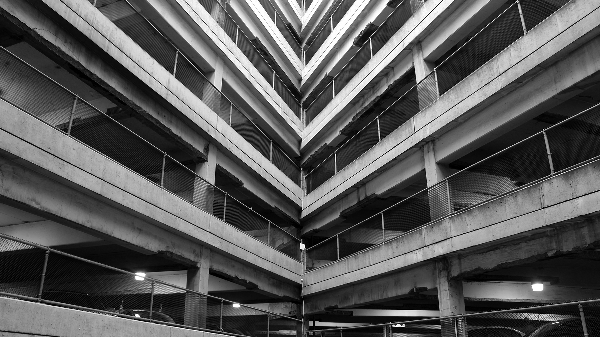
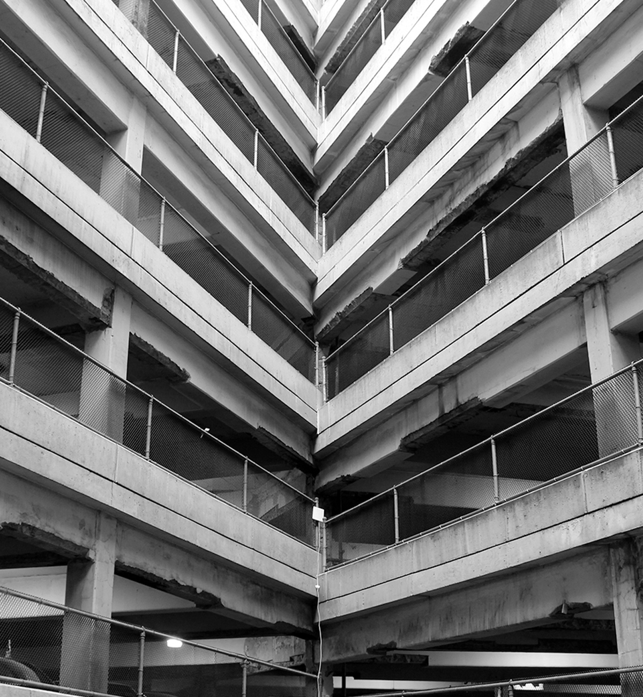

<!doctype html>
<head>
    <title>Salem.io</title>
    <link rel="stylesheet" href="http://meyerweb.com/eric/tools/css/reset/reset.css">
    <script src="http://use.typekit.net/hny2kmy.js"></script>
    <script>try{Typekit.load();}catch(e){}</script>
    <style>

        html {
            height: 100%;
        }

        body {
            min-height: 200vh;
        }

        #masthead img {
            top: -50px;
            left: 0;
            position: absolute;
            opacity: 0.7;
            width: 100%;
        }

        #masthead {
            background-color: black;
            text-align: center;
            margin:  calc((100vh - 600px) / 2) auto;
            overflow: hidden;
            width: 600px;
            position: relative;
            height: 600px;
            background-position: center;
            z-index: 0;
        }

        #masthead h1 {
            display: inline-block;
            z-index: 1;
            position: relative;
            font-size: 84px;
            color: #f17f81;
            margin-top: calc(50% - 114px / 2);
            background-color: white;
            padding: 15px;
            font-weight: 800;
        }
    </style>
</head>
<body>
<!-- 
    <div id="masthead">
        
        <h1 class="tk-letter-gothic-std">Hello</h1>
    </div>

    <script type="text/javascript" src="http://cdnjs.cloudflare.com/ajax/libs/jquery/2.1.3/jquery.min.js"></script>
    <script>
        /*var $img = $("#masthead img");
        $(window).scroll(function() {
            var top = $(this).scrollTop();
            if (top <= 650) {
                var offset = (top / 650) * 50 - 50;
                $img.css('top', offset + 'px');
            }
        }); */

        var $mastheadImg = document.getElementById('masthead-img');
        var parallaxImg = function(element) {
            window.addEventListener('scroll', function() {
                var top = window.scrollY;
                if (top <= 650) {
                    var offset = (top / 650) * 50 - 50;
                    element.style.top = offset + 'px';
                }
            });
        };

        var images = [
            document.getElementById('masthead-img'),
        ];
        images.map(parallaxImg);
    </script>
</body>
